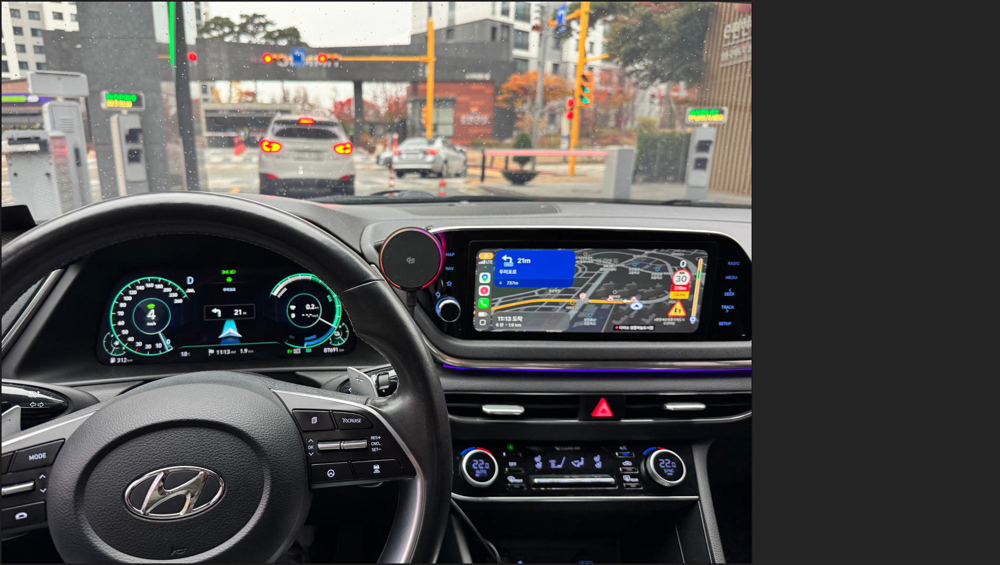

테슬라는 20년에 나온 모델3까지도 계속해서 업데이트를 해주고
새로운 기능을 열어줌. 해외 중국전기차나 독3사도 이렇게 지속적으로
업데이트를 해주는 방향으로 가고 있음.
반면에 국내 자동차회사는 차량을 한번 내 놓으면
내부 OS를 업데이트를 안해줌. 그냥 팔았으면 그게 끝임.
근데 이번에 해외에서 AI를 가지고 현기차 OS를 뚫어버리는 용자가 등장함.
이는 20년 이후부터 플레오스 직전까지 모든 현기차가 해당하는데
내부 OS를 뜯어보니 기존에 유선으로만 연결이 되던 차량 모델들 내부에
무선으로 연결이 되는 모듈이 있는걸 발견함. (애초에 시스템으로 유선 연결만 가능하게 막고 있던것)
거기다가 OS 내부에 자체적으로 카플레이 등을 실행 할 수 있게 개조를 해버림
설치 방법도 간단해서, 5W기반 네비를 가진 차량이라면
프로그램 몇개만 설치해도 순정 네비에서 안드로이드오토(애플카플레이)와
HUD에 티맵 같은 외부 프로그램 연동이 가능해짐

위 사진은 소나타 21년식인데,
계기판 카카오네비 연동에 성공한 모습 (원래는 저게 안됨)
아래는 관련 영상
https://youtu.be/jM1qwwt9lU0?si=H1dP_LpeflqxtCZb
차량에 관심이 있다면 네이버 해당 카페 커뮤니티를 가보실 바람
다양한 차종에서 OS 개조를 하고 있음.
현재 미국에서 콤보4 오픈파일럿과 비슷한 레벨2에 준하는 자율주행을 탑제를
시도하는 그룹이 있음. 조만간 그 형태를 볼 수 있을지도.
*차량 보증에 문제가 되는게 아니냐 하는데
대부분 5W기반 네비 차량은 진작에 제조사 보증이 끝났음
나도 20년식 그랜저IG 타는데 무선동글로 tmap 쓰고 있음 불편한거 아직 모르는데 굳이 할필요 없겟찌??